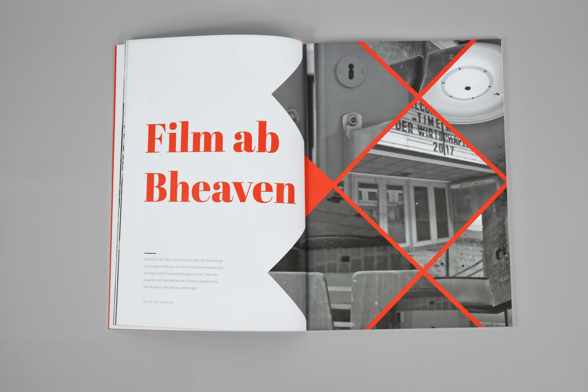
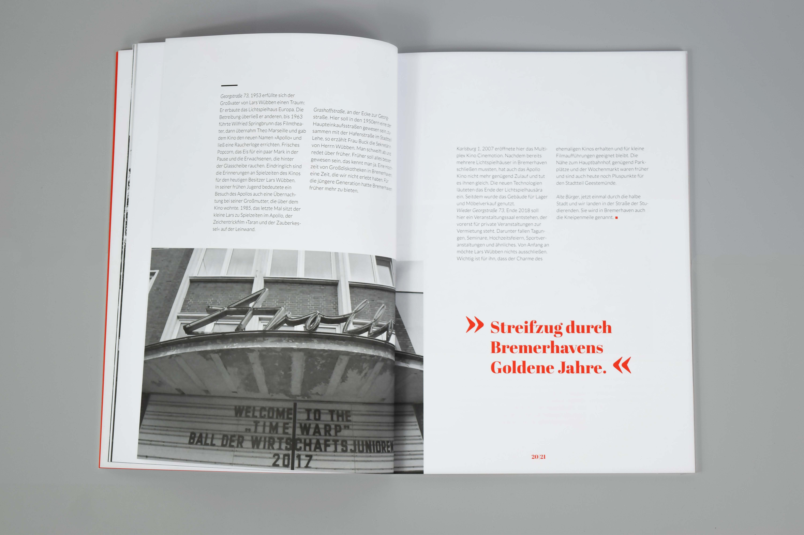
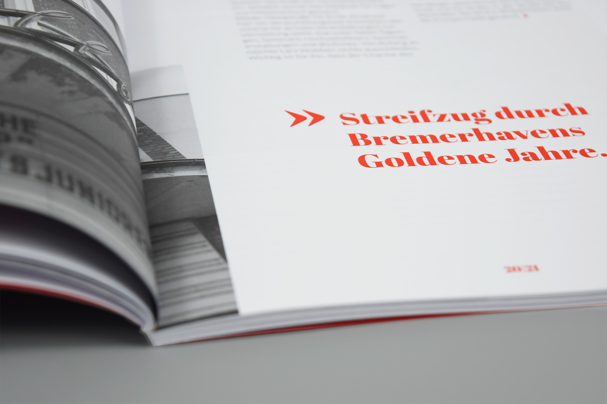

- Im Rahmen eines Projektes an der Hochschule Bremerhaven in einem Team von 15 Studierenden entstand das Magazin sleak für designinteressierte Menschen. Die abgebildete Doppelseite ist von mir gestaltet und der Artikel von mir recherchiert sowie verfasst worden.
- Fachgebiet: Satz und Publizistik
- Entstehung: Studentische Gruppenarbeit
- Datum: März 2022
- Die Herausforderung war es unterschiedlich lange Texte von unterschiedlichen Autoren einheitlich darzustellen. Wir erarbeiteten dem Magazinnamen entsprechend ein schlichtes, elegantes Design in schwarz-weiß mit der Auszeichnungsfarbe HKS 22 rot.


